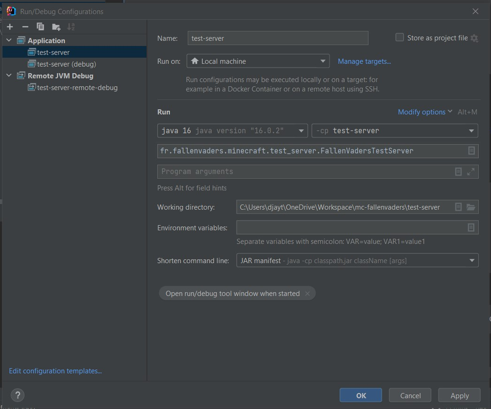
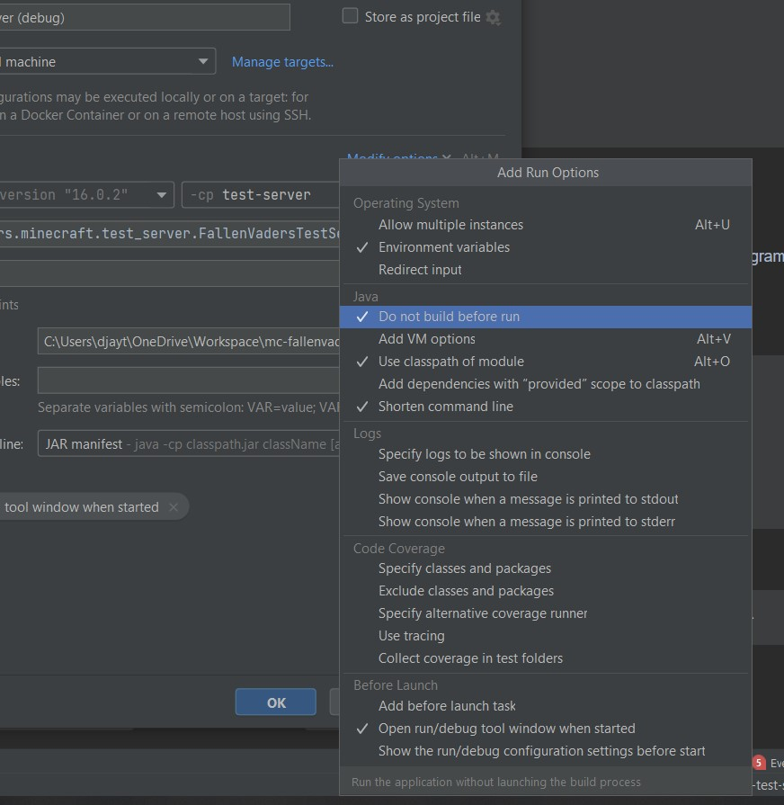
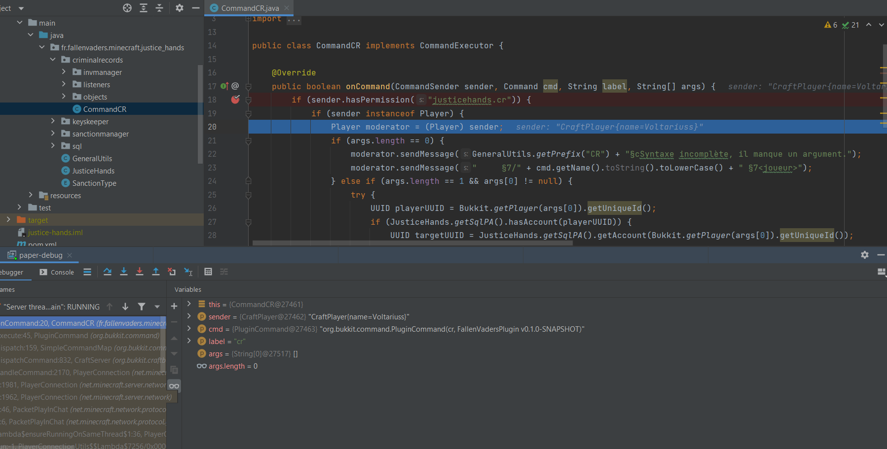
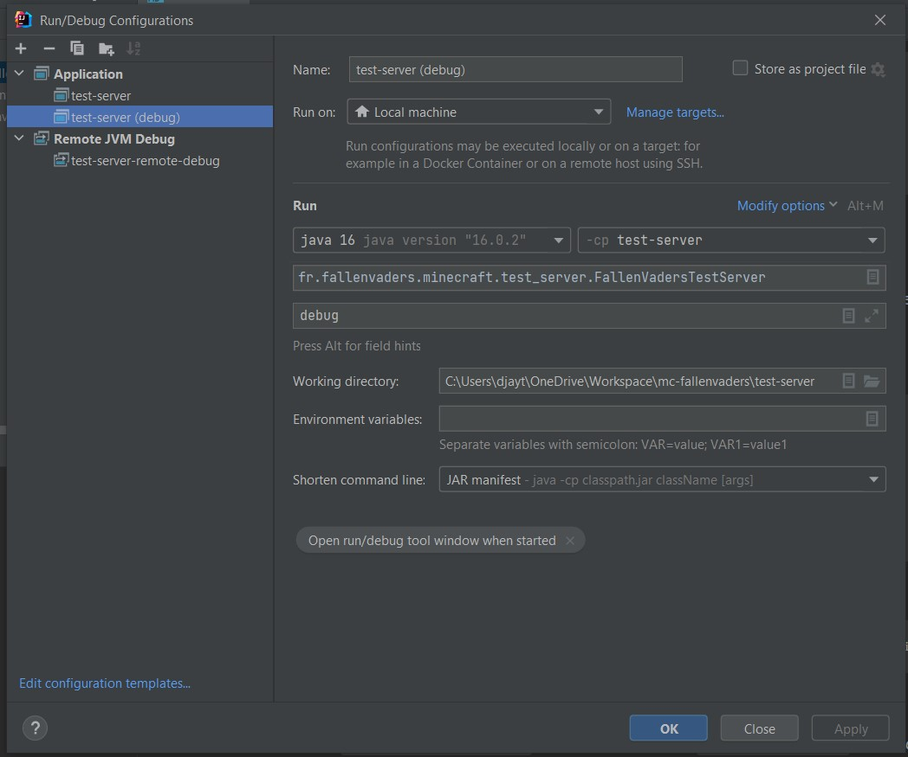
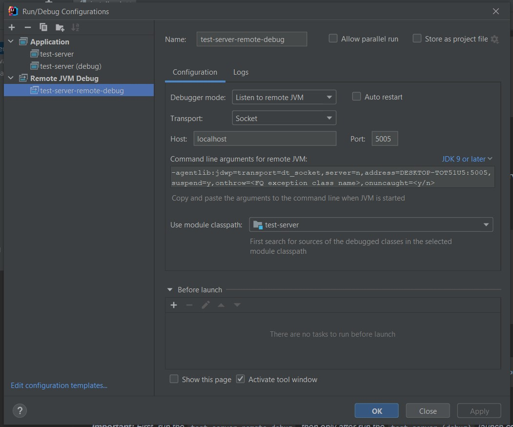

Installation
Prerequisites
To process installation, you must have installed in your environment these following programs:
- Java 16 or above
- Maven 3
- An IDE (IntelliJ IDEA recommended)
Initialization
After cloning sources, run this command at the root folder of the project:
$ mvn initialize
Then run the compilation command presented below.
Compile project
After each code update or for project initialization, run this command:
$ mvn clean install
Launch server
To launch the test server, you have two options:
- Running from the corresponding script (
start.baton Windows,start.shon Linux) - Launch a configuration from your IDE (recommended)
Launch server from IDE configuration
Warning: the following information match correctly with Intellij IDEA that we recommend to use for this project. If this is not your case, you should find by yourself the specific steps to follow for your IDE without promise to success for debug setup section.
Configuration name: test-server
Classpath (or -cp): test-server
Main class: fr.fallenvaders.minecraft.test_server.FallenVadersTestServer
Working directory: path\to\mc-fallenvaders\test-server
Shorten command line: JAR manifest
You may obtain something like this:

Important: It's recommended to deactivate the auto-build of the IDE. Because we use Maven as compiler, the default build is useless, may fail and take time before the launch.
For achieve this, click on "Modify options" and then mark the option "Do not build before run".
You can see the screen below:

Note: If you want to conserve the behavior of build before run, just add a Maven before task.
Note 2: For stopping the server, enter stop in the server console. If you try to
stop it through the IDE's stop button it will not work.
Debug mode
Debug mode allow you to place breakpoint and browse your code step by step, see variables values in live, etc.
This is an illustration of the expected result:

For activate it, first it's recommended to clone the previously created launch configuration
and rename it "test-server (debug)".
Then, add to "Program arguments" this one: debug. It tells the test-server
to run in debug mode.
You should obtain something like this:

Then, create a "Remote JVM Debug" launch config with these params:
Configuration name: test-server-remote-debug
Debugger mode: Listen to remote JVM
Transport: Socket
Host: localhost
Port: 5005 (or what you want that isn't the server port or other one already in use)
Classpath: test-server
You may obtain a generated "Command line arguments for JVM" like this one:
-agentlib:jdwp=transport=dt_socket,server=n,address=DESKTOP-TOT51U5:5005,suspend=y,onthrow=<FQ exception class name>,onuncaught=<y/n>
The result must be similar as this one:

Now, you can run by pressing on the hammer button.
Important: First, run the test-server-remote-debug, then only after run
the test-server (debug) launch config.
If you success, you may obtain this message in test-server-remote-debug's output console:
Connected to the target VM, address: 'localhost:5005', transport: 'socket'
If you launch server in wrong order, you may obtain this error message:
ERROR: transport error 202: connect failed: Connection refused
ERROR: JDWP Transport dt_socket failed to initialize, TRANSPORT_INIT(510)
JDWP exit error AGENT_ERROR_TRANSPORT_INIT(197): No transports initialized [t:\workspace\open\src\jdk.jdwp.agent\share\native\libjdwp\debugInit.c:734]
Note: If you want to start the server without the remote debug, you
must run test-server instead of test-server (debug).